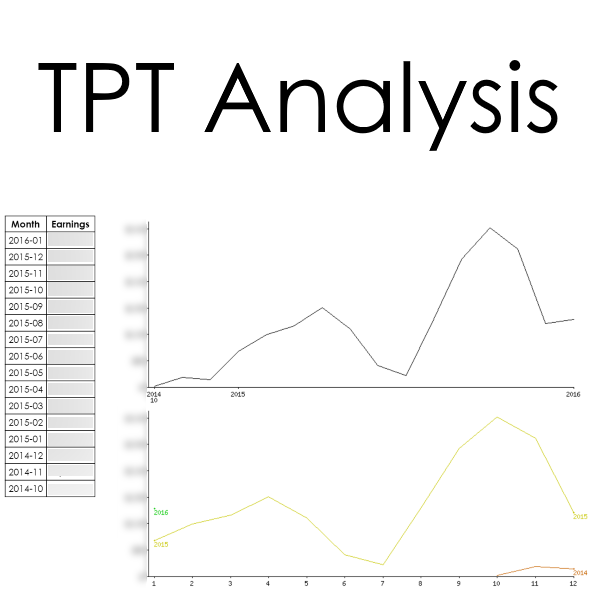

Jake Wills
These are some of the things I get up to.
If you've got a project you want me to help out with
contact me
.
Easy way to keep track of how much time you spend on projects.
Site to generate statistical graphs for a wide range of data.
Site to support teachers teaching maths in New Zealand.
Site to support students learning maths in New Zealand.
Site to create questions / workseets for students doing maths in New Zealand.
Free tweet wall with moderation features (for use at conferences).
Sync to AD from KAMAR using directory services (open source).
Create Classrooms for each every class with the students / teachers in it.

Tool to easily analyse sales data from Teachers Pay Teachers.
Site for teachers to securely share assessment resources.
I developed this before selling it... makes it easy for schools to use data.
I also like to take photos of random things... particularly stars.
If you want to get in touch
email me
or give me a call on 021-061-5390